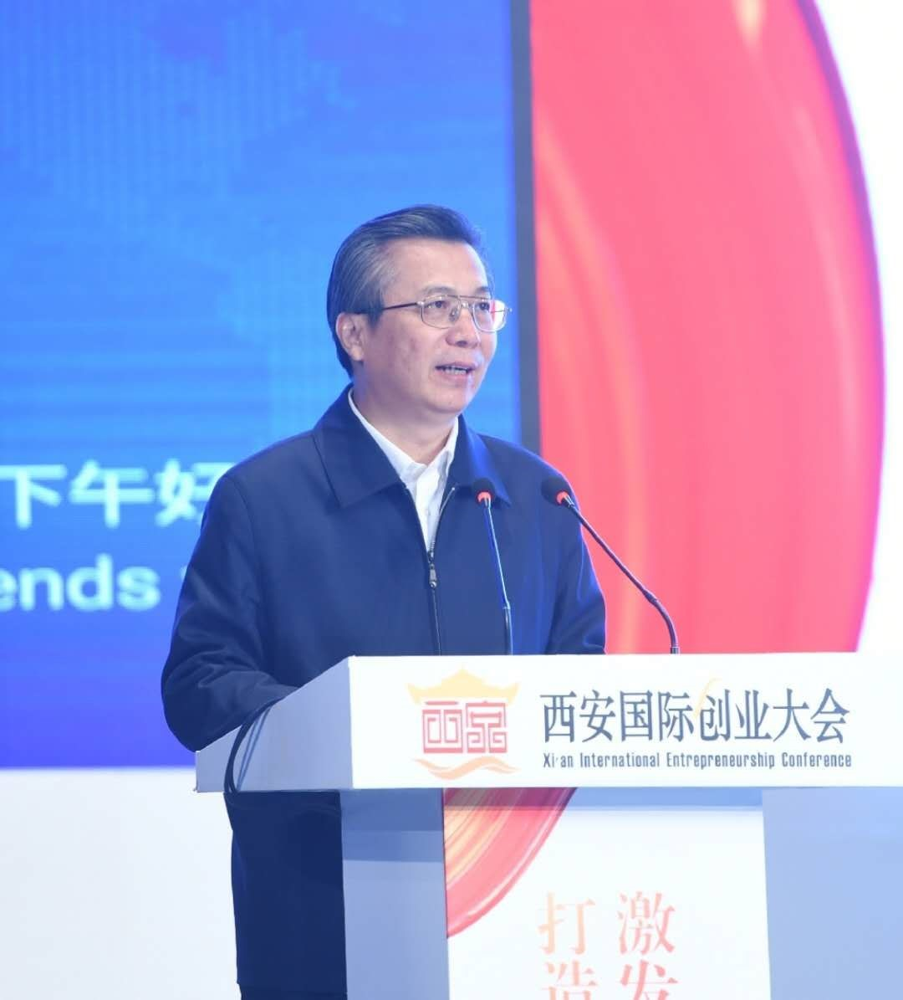

创业是新时代的强音，英雄是新时代的强者。
5月22日下午，西安国际创业大会开幕式暨创业英雄表彰大会在曲江国际会议中心举行。省委常委、市委书记王永康，科技部火炬中心副主任段俊虎致辞，中国科学院院士李应红、中国工程院院士王双明、新加坡科学院院士段锦泉、市政协主席岳华峰出席，市长上官吉庆主持。

省委常委、市委书记王永康在大会发言
王永康代表市委、市政府，向与会的各位嘉宾表示热烈欢迎，向获奖的8大类100位创业英雄表示衷心祝贺。他说，激情成就梦想，创业点亮人生。今天的大西安，每天都在发生着新的创业奇迹，每天都在诞生着新的创业英雄。大西安将鼓励创业、支持创新，激发创新活力、打造创业之都，让各类人才在大西安干事有舞台、发展有空间、出彩有机会。
本次西安创业英雄评选活动由政府组织多个领域的专家严格评审结合网络公开投票，历经重重筛选，最终有100位佼佼者脱颖而出。经过激烈的角逐，陕西万盛达信息科技有限公司董事长李刚成功入选西安创业英雄百强。
陕西万盛达信息科技有限公司董事长李刚荣获“西安创业英雄”称号
董事长李刚获此殊荣与他解决问题创造价值的理性务实的创新创业观和不断突破勇于进取的创业精神有着密切关系。在“互联网+”的时代风潮下，他积极响应国家创新驱动发展战略，创办了陕西万盛达信息科技有限公司。
在他的带领下，公司坚持走自主创业、自主研发知识产权的道路，先后荣获高新技术企业证书，陕西省科学技术成果登记证书，拥有31项软件著作权。2015年8月获得陕西省科技厅“重大科技成果转化引导专项”立项扶持资金；2016年5月获得碑林区科技“小巨人培育计划”立项及资金扶持奖励；2016年6月以经济支撑和稳增长影响较大被碑林区政府“亲商助企”活动作为重点帮扶企业；2016年6月获中小企业局“现代服务业发展专项”项目立项；2016年获得“陕西省民营科技企业认定”；2017年1月被统计局纳入国家规模以上服务企业；2017年4月获得西安市科技局颁发的西安市民营科技企业，同时被列为陕西省工信厅两化融合示范企业和大数据应用示范企业；2017年11月获得碑林区“科技进步明星企业”奖。
董事长李刚表示很荣幸能获得“西安创业英雄”这项荣誉。作为科技企业，政府对我们的发展给予了很多指导和支持，我有信心与我的团队一起扎根西安这片创业热土，为西安的城市发展与建设奉献智慧与力量。